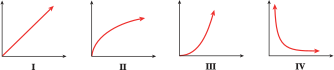
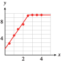

Exercises 2.10 Homework 2.4
¶In Problems 1–4, which graph best illustrates each of the following situations?


In Problems 5–8, sketch graphs to illustrate the following situations
5.
Halfway from your English class to your math class, you realize that you left your math book in the classroom. You retrieve the book, then walk to your math class. Graph the distance between you and your English classroom as a function of time, from the moment you originally leave the English classroom until you reach the math classroom.
6.
After you leave your math class, you start off toward your music class. Halfway there you meet an old friend, so you stop and chat for a while. Then you continue to the music class. Graph the distance between you and your math classroom as a function of time, from the moment you leave the math classroom until you reach the music classroom.
7.
Toni drives from home to meet her friend at the gym, which is halfway between their homes. They work out together at the gym; then they both go to the friend's home for a snack. Finally Toni drives home. Graph the distance between Toni and her home as a function of time, from the moment she leaves home until she returns.

8.
While bicycling from home to school, Greg gets a flat tire. He repairs the tire in just a few minutes but decides to backtrack a few miles to a service station, where he cleans up. Finally, he bicycles the rest of the way to school. Graph the distance between Greg and his home as a function of time, from the moment he leaves home until he arrives at school.
Choose the graph that depicts the function described in Problems 9 and 10.
9.
Inflation is still rising, but by less each month.

(b)
10.
The price of wheat was rising more rapidly in 1996 than at any time during the previous decade.

In Problems 11 and 12, match each graph with the function it illustrates.
11.
The volume of a cylindrical container of constant height as a function of its radius
The time it takes to travel a fixed distance as a function of average speed
The simple interest earned at a given interest rate as a function of the investment
The number of Senators present versus the number absent in the U.S. Senate
II
IV
I
III
12.
Unemployment was falling but is now steady.
Inflation, which rose slowly until last month, is now rising rapidly.
The birthrate rose steadily until 1990 but is now beginning to fall.
The price of gasoline has fallen steadily over the past few months.

Sketch possible graphs to illustrate the situations described in Problems 13–18.
13.
The height of a man as a function of his age, from birth to adulthood

14.
The number of people willing to buy a new high-definition television, as a function of its price
15.
The height of your head above the ground during a ride on a Ferris wheel
16.
The height above the ground of a rubber ball dropped from the top of a \(10\)-foot ladder
17.
The average age at which women first marry decreased from 1940 to 1960, but it has been increasing since then

18.
When you learn a foreign language, the number of vocabulary words you know increases slowly at first, then increases more rapidly, and finally starts to level off.
Each situation in Problems 19–24 can be modeled by a transformation of a basic function. Name the basic function and sketch a possible graph.
19.
The volume of a hot air balloon, as a function of its radius
\(y = x^3\) stretched or compressed vertically
20.
The length of a rectangle as a function of its width, if its area is \(24\) square feet
21.
The time it takes you to travel \(600\) miles, as a function of your average speed
\(y =\dfrac{1}{x} \) stretched or compressed vertically

22.
The sales tax on a purchase, as a function of its price
23.
The width of a square skylight, as a function of its area
\(y =\sqrt{x} \)

24.
The sales tax on a purchase, as a function of its price
In Problems 25–28, use the table of values to answer the questions.
Based on the given values, is the function increasing or decreasing?
Could the function be concave up, concave down, or linear?
25.
| \(x\) | \(0\) | \(1\) | \(2\) | \(3\) | \(4\) |
| \(f(x)\) | \(1\) | \(1.5\) | \(2.25\) | \(3.375\) | \(5.0625\) |
Increasing
Concave up
26.
| \(x\) | \(0\) | \(1\) | \(2\) | \(3\) | \(4\) |
| \(g(x)\) | \(1\) | \(0.8\) | \(0.64\) | \(0.512\) | \(0.4096\) |
27.
| \(x\) | \(0\) | \(1\) | \(2\) | \(3\) | \(4\) |
| \(f(x)\) | \(0\) | \(0.174\) | \(0.342\) | \(0.5\) | \(0.643\) |
Increasing
Concave down
28.
| \(x\) | \(0\) | \(1\) | \(2\) | \(3\) | \(4\) |
| \(c(x)\) | \(1\) | \(0.985\) | \(0.940\) | \(0.866\) | \(0.766\) |
In Problems 29–34,
Is the graph increasing or decreasing, concave up or concave down?
Match the graph of the function with the graph of its rate of change, shown in Figures A–F.


For Problems 35–40, plot the data; then decide which of the basic functions could describe the data.
35.
| \(~x~\) | \(~0~\) | \(0.5\) | \(~1~\) | \(2\) | \(4\) |
| \(y\) | \(0\) | \(3.17\) | \(4\) | \(5.04\) | \(6.35\) |

\(y=4 \sqrt[3]{x} \)
36.
| \(~x~\) | \(~0~\) | \(0.5\) | \(~1~\) | \(2\) | \(4\) |
| \(y\) | \(0\) | \(5.66\) | \(8\) | \(11.31\) | \(16\) |
37.
| \(~x~\) | \(0.5\) | \(~1~\) | \(~2~\) | \(3\) | \(4\) |
| \(y\) | \(12\) | \(3\) | \(0.75\) | \(0.33\) | \(0.1875\) |
\(y=3\cdot \dfrac{1}{x^2} \)
38.
| \(~x~\) | \(0.5\) | \(~1~\) | \(~2~\) | \(~3~\) | \(~4~\) |
| \(y\) | \(12\) | \(6\) | \(3\) | \(2\) | \(1.5\) |
39.
| \(~x~\) | \(~0~\) | \(0.5\) | \(~1~\) | \(~2~\) | \(3\) |
| \(y\) | \(0\) | \(0.125\) | \(0.5\) | \(2\) | \(4.5\) |
\(y=0.5 x^2 \)
40.
| \(~x~\) | \(~0~\) | \(0.5\) | \(~1~\) | \(~2~\) | \(3\) |
| \(y\) | \(0\) | \(0.0125\) | \(0.1\) | \(0.8\) | \(2.7\) |
41.
Four different functions are described below. Match each description with the appropriate table of values and with its graph.
As a chemical pollutant pours into a lake, its concentration is a function of time. The concentration of the pollutant initially increases quite rapidly, but due to the natural mixing and self-cleansing action of the lake, the concentration levels off and stabilizes at some saturation level.
An overnight express train travels at a constant speed across the Great Plains. The train's distance from its point of origin is a function of time.
The population of a small suburb of a Florida city is a function of time. The population began increasing rather slowly, but it has continued to grow at a faster and faster rate.
The level of production at a manufacturing plant is a function of capital outlay, that is, the amount of money invested in the plant. At first, small increases in capital outlay result in large increases in production, but eventually the investors begin to experience diminishing returns on their money, so that although production continues to increase, it is at a disappointingly slow rate.
\(~x~\) \(~1~\) \(~2~\) \(~3~\) \(~4~\) \(~5~\) \(~6~\) \(~7~\) \(~8~\) \(y\) \(60\) \(72\) \(86\) \(104\) \(124\) \(149\) \(179\) \(215\) \(~x~\) \(~1~\) \(~2~\) \(~3~\) \(~4~\) \(~5~\) \(~6~\) \(~7~\) \(~8~\) \(y\) \(60\) \(85\) \(103\) \(120\) \(134\) \(147\) \(159\) \(169\) \(~x~\) \(~1~\) \(~2~\) \(~3~\) \(~4~\) \(~5~\) \(~6~\) \(~7~\) \(~8~\) \(y\) \(60\) \(120\) \(180\) \(240\) \(300\) \(360\) \(420\) \(480\) \(~x~\) \(~1~\) \(~2~\) \(~3~\) \(~4~\) \(~5~\) \(~6~\) \(~7~\) \(~8~\) \(y\) \(60\) \(96\) \(118\) \(131\) \(138\) \(143\) \(146\) \(147\)


Table (4), Graph (C)
Table (3), Graph (B)
Table (1), Graph (D)
Table (2), Graph (A)
42.
Four different functions are described below. Match each description with the appropriate table of values and with its graph.
Fresh water flowing through Crystal Lake has gradually reduced the phosphate concentration to its natural level, and it is now stable.
The number of bacteria in a person during the course of an illness is a function of time. It increases rapidly at first, then decreases slowly as the patient recovers.
A squirrel drops a pine cone from the top of a California redwood. The height of the pine cone is a function of time, decreasing ever more rapidly as gravity accelerates its descent.
Enrollment in Ginny's Weight Reduction program is a function of time. It began declining last fall. After the holidays, enrollment stabilized for a while but soon began to fall off again.
\(~x~\) \(~0~\) \(~1~\) \(~2~\) \(~3~\) \(~4~\) \(y\) \(160\) \(144\) \(96\) \(16\) \(0\) \(~x~\) \(~0~\) \(~1~\) \(~2~\) \(~3~\) \(~4~\) \(y\) \(20\) \(560\) \(230\) \(90\) \(30\) \(~x~\) \(~0~\) \(~1~\) \(~2~\) \(~3~\) \(~4~\) \(y\) \(480\) \(340\) \(240\) \(160\) \(120\) \(~x~\) \(~0~\) \(~1~\) \(~2~\) \(~3~\) \(~4~\) \(y\) \(250\) \(180\) \(170\) \(150\) \(80\)


43.
The table shows the radii, \(r\text{,}\) of several gold coins, in centimeters, and their value, \(v\text{,}\) in dollars.
| Radius | \(0.5\) | \(1\) | \(1.5\) | \(2\) | \(2.5\) |
| Value | \(200\) | \(800\) | \(1800\) | \(3200\) | \(5000\) |
-
Which graph represents the data?

-
Which equation describes the function?
\(v=k\sqrt{r} \)
\(v=kr\)
\(v=kr^2\)
\(v=\dfrac{k}{r} \)
III
3
44.
The table shows how the amount of water, \(A\text{,}\) flowing past a point on a river is related to the width, \(W\text{,}\) of the river at that point.
| Width (feet) | \(11\) | \(23\) | \(34\) | \(46\) |
| Amount of water \(\text{(ft}^3/\text{sec)} \) |
\(23\) | \(34\) | \(41\) | \(47\) |
-
Which graph represents the data?
 -
Which equation describes the function?
\(A=k\sqrt{W} \)
\(A=kW\)
\(A=kW^2\)
\(A=\dfrac{k}{W} \)
45.
If you order from Coldwater Creek, the shipping charges are given by the following table.
| Purchase amount |
Shipping charge |
| Up to $25 | $5.95 |
| $25.01 to $50 | $7.95 |
| $50.01 to $75 | $9.95 |
| $75.01 to $100 | $10.95 |
Write a piecewise formula for \(S(x)\text{,}\) the shipping charge as a function of the purchase amount, \(x\text{.}\)
Graph \(S(x)\text{.}\)
\(S(x) = \begin{cases} 5.95 \amp x \le 25\\ 7.95 \amp 25\lt x\le 50\\ 9.95 \amp 50\lt x\le 75\\ 10.95 \amp 75\lt x\le 100 \end{cases}\)

46.
The Bopp-Busch Tool and Die Company markets its products to individuals, to contractors, and to wholesale distributors. The company offers three different price structures for its toggle bolts. If you order \(20\) or fewer boxes, the price is $\(2.50\) each. If you order more than \(20\) but no more than \(50\) boxes, the price is $\(2.25\) each. If you order more than \(50\) boxes, the price is $\(2.10\) each.
Write a piecewise formula for \(C(x)\text{,}\) the cost of ordering \(x\) boxes of toggle bolts.
Graph \(C(x)\text{.}\)
47.
Bob goes skydiving on his birthday. The function \(h(t)\) approximates Bob's altitude \(t\) seconds into the trip.
Graph \(h(t)\text{.}\) Describe what you think is happening during each piece of the graph.
Find two times when Bob is at an altitude of \(6000\) feet.
-

During the first 400 seconds Bob's altitude is climbing with the aircraft; then the aircraft maintains a constant altitude of 10,000 feet for the next 100 seconds; after jumping from the plane, Bob falls for 20 seconds before opening the parachute; he falls at a constant rate after the chute opens.
\(240\) seconds (4 minutes) and \(500 + \sqrt{250}\approx 515.8\)
48.
Jenni lives in the San Fernando Valley, where it is hot during summer days but cools down at night. Jenni the air conditioner as little as possible. The function \(T(h)\) approximates the temperature in Jenni's house \(h\) hours after midnight.
Graph \(T(h)\text{.}\) Describe what you think is happening during each piece of the graph.
Find two times when the temperature inside the house is \(85\degree\) Fahrenheit.
49.
Lead nitrate and potassium iodide react in solution to produce lead iodide, which settles out, or precipitates, as a yellow solid at the bottom of the container. As you add more lead nitrate to the solution, more lead iodide is produced until all the potassium iodide is used up. The table shows the height of the precipitate in the container as a function of the amount of lead nitrate added. (Source: Hunt and Sykes, 1984)
| Lead nitrate solution (cc) |
\(0.5\) | \(1.0\) | \(1.5\) | \(2.0\) | \(2.5\) | \(3.0\) | \(3.5\) | \(4.0\) |
| Height of precipitate (mm) |
\(2.8\) | \(4.8\) | \(6.2\) | \(7.4\) | \(9.5\) | \(9.6\) | \(9.6\) | \(9.6\) |
Plot the data. Sketch a piecewise linear function with two parts to fit the data points
Calculate the slope of the increasing part of the graph, including units. What is the significance of the slope?
Write a formula for your piecewise function.
Interpret your graph in the context of the problem.
- 
\(m\approx 3.2\) mm/cc: The height of precipitate increases by \(1\) mm for each additional cc of lead nitrate
\(f(x)= \begin{cases} 1.34 + 3.2x \amp x \lt 2.6\\ 9.6 \amp x\ge 2.6 \end{cases}\)
The increasing portion of the graph corresponds to the period when the reaction was occurring, and the horizontal section corresponds to when the potassium iodide is used up.
50.
The graph shows the temperature of \(1\) gram of water as a function of the amount of heat applied, in calories. Recall that water freezes at \(0\degree\)C and boils at \(100\degree\)C.
How much heat is required to raise the temperature of \(1\) gram of water by \(1\) degree?
How much heat is required to convert \(1\) gram of ice to water?
How much heat is required to convert \(1\) gram of water to steam?
Write a piecewise function to describe the graph.
51.
As the global population increases, many scientists believe it is approaching, or has already exceeded, the maximum number the Earth can sustain. This maximum number, or carrying capacity, depends on the finite natural resources of the planet—water, land, air, and materials—but also on how people use and preserve the resources. The graphs show four different ways that a growing population can approach its carrying capacity over time. (Source: Meadows, Randers, and Meadows, 2004)
Match each graph to one of the scenarios described in (a)–(d) and explain your choice.
Sigmoid growth: The population levels off smoothly below the carrying capacity.
Overshoot and collapse: The population exceeds the carrying capacity with severe damage to the resource base and is forced to decline rapidly to achieve a new balance with a reduced carrying capacity
Continued growth: The carrying capacity is far away, or growing faster than the population.
Overshoot and oscillation: The population exceeds the carrying capacity without inflicting permanent damage, then oscillates around the limit before leveling off.
II
IV
I
III
52.
The introduction of a new species into an environment can affect the growth of an existing species in various ways. The graphs show four hypothetical scenarios after Species A is introduced into an environment where Species B is established.
Match each graph to one of the scenarios described in (a)–(d) and explain your choice.
Predator-prey (sustained): Species A becomes a predator population that grows when its prey, Species B, is abundant, but declines when the prey population is small. The prey population grows when predators are scarce but shrinks when predators are abundant.
Predator-prey (extinction): Species A becomes a predator population that annihilates Species B, but then Species A itself declines toward extinction.
Competition: Species A and B have a common food source, and the Species A replaces Species B in the environment.
Symbiosis: Species A and B help each other to grow.